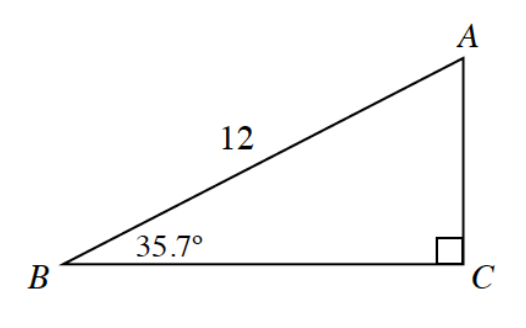
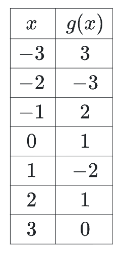

Solve for all missing side lengths and angle measures in the triangle at right.

Solve each equation for \(a\) in terms of \(y\).
\(y=7^a\)
\(y=a^x\)
\(y=\log_b(a)\)
Given \(\log_b(M)=2.1\), \(\log_b(N)=0.6\) and \(\log_b(P)=-1.8\), evaluate \(\log_b\left(\frac{NP}{M^2}\right)\).
Determine the exact values of the following trigonometric expressions.
\(\cos\left(\frac{4\pi}{3}\right)\)
\(\sin\left(\frac{11\pi}{6}\right)\)
\(\sin\left(\frac{-2\pi}{3}\right)\)
\(\tan\left(\frac{4\pi}{3}\right)\)
Graph \(y=\frac{-x+2}{x+2}\).
What is the domain?
Write an equation for the vertical asymptote.
Write an equation for the horizontal asymptote.
\(f(x)=\sin^{-1}(x)\), \(g(x)=\cos^{-1}(x)\), and \(h(x)=\tan^{-1}(x)\), are all functions because they have restricted ranges. State the range of each function.
When Gretchen was born her grandmother purchased a stock in her name. The value of stock was $1280. On her 18th birthday Gretchen finds out about the stock and realizes it is worth $5000. What was the average annual rate of return for the stock?
Sketch the graph of \(f(x)=x(x+7)(x+4)^2(x-2)\) without using a graphing calculator. Do not scale your axes, but be sure to label the important points. Describe the end behavior.
Given \(\triangle DOG\), where \(\angle D = 64^\circ\), \(\angle O = 38^\circ\), and \(DO = 8\) inches.
Draw a diagram that is roughly to scale.
Solve the triangle completely.
Calculate the area of \(\triangle DOG\).
Factor each expression completely.
\((a-3)^3-(a-3)\)
\(5x(x-3)-4(x-3)\)
Given \(f(x)=2x+3\) and \(g(x)\) as defined by the table at right, evaluate each of the following expressions.

\(f^{-1}(0)\)
\(f(2)+g(2)\)
\(f\circ g(2)\)
\(g\circ f(-1)\)
\(g^{-1}(0)\)
\(f\circ(f^{-1}\circ g)\)
Solve each of the following equations.
\(\log_b(x)-\log_b(5)=2\)
\(2(1.5)^x-3=33\)
Describe the transformations and sketch the graphs of the following trigonometric functions.
\(f(x)=-2\cos\left(\frac{x}{2}\right)+3\)
\(g(x)=3\sin(x-\pi)-1\)
Complete the following division problems. Express any remainder as a fraction.
\((x^3+x^2-14x+2)\div(x-3)\)
\((6.4x^5+5.3x^4-11.3x^2-24)\div(2x+3)\)
Write an equation for a fifth-degree polynomial function that has roots at \(x=-1\pm\sqrt{5}\), \(x=-2\), \(x=1\), \(x=5\), and passes through the point \((-3,20)\).
Expand each of the following expressions.
\((b-a\cos(C))^2\)
\((\sin(d)-\cos(d))^2\)